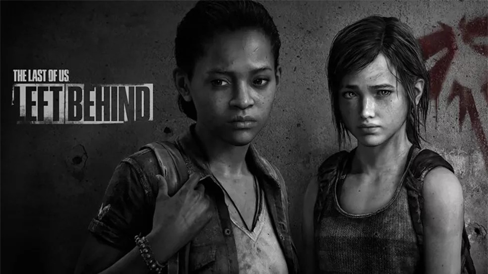
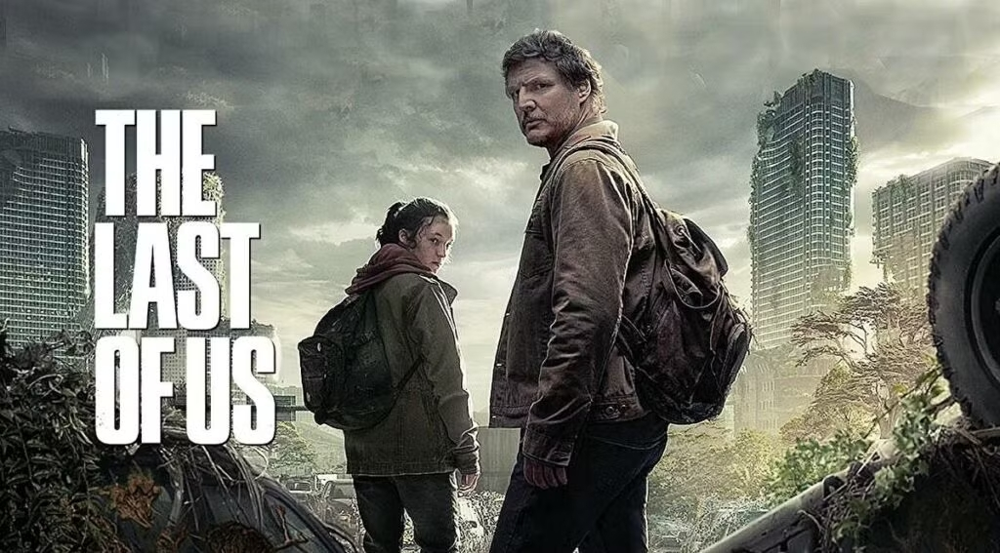

The Last of Us: Sobreviver é Apenas o Começo
The Last of Us, desenvolvido pela Naughty Dog e publicado pela Sony Interactive Entertainment, é mais do que um jogo — é uma narrativa profunda e brutal sobre amor, perda, humanidade e sobrevivência. Combinando gameplay envolvente com uma história cinematográfica e emocionalmente devastadora, a franquia redefiniu o que significa contar histórias nos videogames.0
The Last of Us (2013) – PlayStation 3 / Remastered (PS4) / Remake (PS5)

Vinte anos após um surto do fungo Cordyceps dizimar a civilização, acompanhamos Joel, um contrabandista endurecido, encarregado de levar Ellie, uma adolescente imune ao vírus, através de um mundo destruído. Ao longo da jornada, laços profundos se formam entre os dois, culminando em decisões morais complexas que desafiam o que é certo ou errado.
Destaque: História intensa, personagens marcantes, ambientação pós-apocalíptica realista e uma das cenas finais mais impactantes da história dos videogames.
The Last of Us: Left Behind (2014) – DLC / Standalone
Um capítulo adicional que se passa antes e durante os eventos do primeiro jogo. Aqui, jogamos com Ellie e conhecemos sua amiga Riley, explorando temas como amor, juventude e perda — tudo isso enquanto o mundo desaba ao redor delas.
Destaque: Expande a história de Ellie e revela detalhes cruciais sobre sua personalidade e sua imunidade.
The Last of Us Part II (2020) – PlayStation 4 / Remastered (PS5)

Cinco anos após os eventos do primeiro jogo, Ellie parte em uma jornada de vingança devastadora após uma tragédia pessoal. O jogo alterna perspectivas entre Ellie e uma nova personagem, Abby, oferecendo uma visão crua dos ciclos de violência, empatia e humanidade em meio à destruição.
Destaque: Narrativa ousada e divisiva, com mudanças de perspectiva, estrutura não linear, e um aprofundamento emocional inédito em jogos do gênero.
The Last of Us – Série da HBO (2023)
A adaptação televisiva expandiu o universo da franquia, mantendo-se fiel ao espírito do jogo enquanto aprofunda personagens e eventos. Aclamada pela crítica, a série trouxe Pedro Pascal como Joel e Bella Ramsey como Ellie, conquistando novos públicos e reforçando a força narrativa da história.
Destaque: Mistura de fidelidade com liberdade criativa, enriquecendo ainda mais o universo da franquia.
O Peso das Decisões em um Mundo Sem Esperança
The Last of Us é uma história sobre sobrevivência, mas também sobre amor, sacrifício e as consequências das nossas escolhas. Não se trata apenas de lutar contra infectados — mas contra aquilo que perdemos, contra o que nos tornamos e contra a esperança que insiste em sobreviver mesmo nas trevas.
Nem sempre somos os heróis das nossas próprias histórias — mas em um mundo destruído, amar ainda é um ato de resistência.